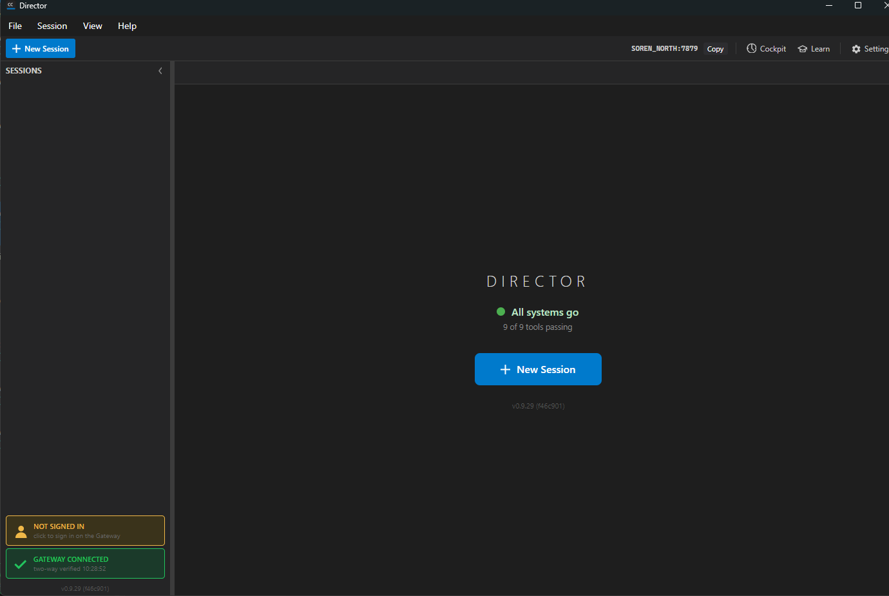

Title: [Director] Add a read-only ACCOUNT status box to the sidebar status stack
Pull request: #867 Branch: issue-852-account-box Tested commit: f46c9015 (UI shows v0.9.29 (f46c901))
Verifier: QA Agent (independent identity, did not see the Developer's work)
Method: Built the PR branch in an isolated worktree, ran the unit tests, launched a per-session-isolated Director (slot 15, exact-path teardown), read the running app and its log, and code-reviewed the state-to-visual mapping.
| # | Criterion | Expected | Actual | Evidence | Result |
|---|---|---|---|---|---|
| 1 | Signed-in Gateway shows green and the signed-in email. | State SignedIn, green accent, email shown. |
Presenter maps a reachable+signed-in status to SignedIn with the email as the sub-text; the code-behind paints green #22C55E and sets the sub-text to status.Email. Unit test Describe_SignedIn_ReturnsSignedInStateWithEmail asserts exactly this and passes. A live signed-in capture needs a real DevThrottle account on the Gateway, which cannot be staged from the QA automation - judged on the passing unit test plus code review (stated honestly). |
AccountIndicatorPresenter.cs; AccountIndicatorPresenterTests (PASS); MainWindow.axaml.cs UpdateAccountIndicator | PASS |
| 2 | Signed-out Gateway shows the amber "NOT SIGNED IN" nudge. | Amber box reading "NOT SIGNED IN". | Live: the Director sidebar shows the amber "NOT SIGNED IN / click to sign in on the Gateway" box directly above the GATEWAY box. Log confirms state=NotSignedIn, configured=True, reachable=True, signedIn=False from a real GET /account/status 200 response. |
qa-notsignedin-live.png; director log lines 155-163 | PASS (live) |
| 3 | Clicking the not-signed-in box opens the Cockpit Account page. | Browser opens {frontDoor}/account. |
AccountIndicator_PointerPressed acts only in the NotSignedIn state, resolves the Cockpit base, asks the Gateway GET {base}/cockpit for the Tailscale front door, builds {frontDoor}/account via BuildAccountUrl, and opens the browser (never a localhost URL). The two AccountIndicatorUrlTests assert {frontDoor}/account with no double slash and pass. Verified by test + code review; a live browser launch was not triggered to avoid side effects. |
MainWindow.axaml.cs AccountIndicator_PointerPressed / BuildAccountUrl; AccountIndicatorUrlTests (PASS) | PASS |
| 4 | No Gateway or unreachable /account/status shows a muted unavailable state, NOT a false "signed out". |
State Unavailable (muted), never NotSignedIn. |
The presenter maps both !GatewayConfigured and !Reachable to Unavailable; the code-behind paints the muted palette #777777/#2A2A2A. Two unit tests (Describe_NoGatewayConfigured_... and Describe_ConfiguredButUnreachable_...) assert Unavailable and explicitly NotEqual NotSignedIn; both pass. The box also opens in this muted "reading account status..." state at startup. This machine's Gateway was up, so the unreachable path could not be staged live - judged on the two passing tests plus code review (stated honestly). |
AccountIndicatorPresenter.cs; AccountIndicatorPresenterTests (PASS) | PASS |
| 5 | Sidebar paints at startup with the account read happening asynchronously (no synchronous blocking call on the UI thread). | Window paints immediately; status read off the UI thread. | Live log timeline: 10:26:36.251 Account indicator wired (wiring returned instantly), 10:26:36.270 GET /account/status (read started ~19 ms later on a Task.Run thread, off the UI thread), 10:26:36.380 UpdateAccountIndicator (repaint via Dispatcher.UIThread.Post). The Director painted its "All systems go" home screen with no wait. A 30-second heartbeat re-poll repeats. Overlapping reads are guarded by _accountReadInFlight. |
director log lines 139-163; qa-notsignedin-live.png | PASS (live) |
Confirmed. The Director booted straight to the main window ("All systems go" home, New Session button) with no sign-in form, modal, or block. WireAccountIndicator is only a DispatcherTimer heartbeat; the box's sole action is opening a browser link out to the Gateway-managed Cockpit Account page. This is the opposite of a gate.
AccountIndicatorPresenter) is a pure, UI-free Core type; try/catch sits at the entry points (timer tick, pointer-pressed); enterprise logging present.Slot-15 Director built from the PR branch (version v0.9.29 (f46c901)), home screen with no gate, amber "NOT SIGNED IN" account box above the green GATEWAY box:

AccountIndicatorPresenterTests: Passed 6, Failed 0. AccountIndicatorUrlTests: Passed 2, Failed 0. The CcDirector.Avalonia assembly compiled clean.
Verified independently against the issue's acceptance criteria, not the Developer's report. AC#2 and AC#5 proven live; AC#1, AC#3, and AC#4 proven by passing unit tests plus code review where a live capture was infeasible (a real signed-in account, a browser launch, and an unreachable Gateway respectively cannot be staged from the QA automation) - stated honestly, not rubber-stamped.